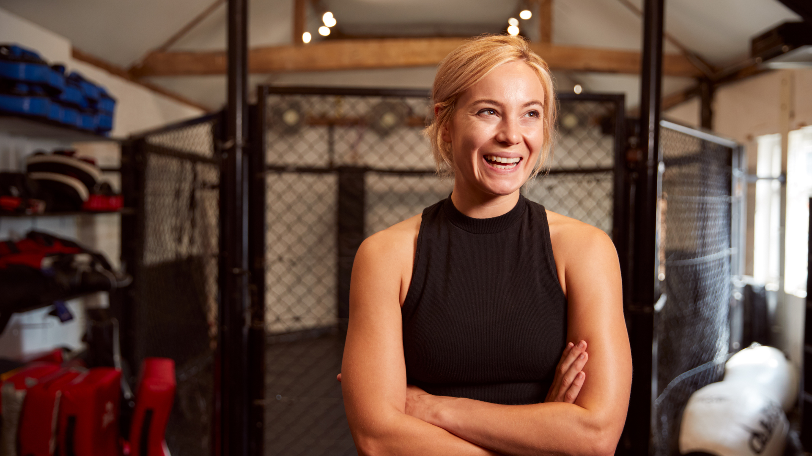

Three months ago, I walked into a gym for the first time in my adult life. I didn't have a plan. I didn't know what half the machines did. I wore old running shoes and a cotton t-shirt that was soaked through in 10 minutes. I lasted 25 minutes before I left, embarrassed and out of breath.
Today, I train five days a week. I deadlift more than my bodyweight. I sleep better, think clearer, and genuinely look forward to my workouts. This is the story of what happened in between — and what I wish someone had told me before I started.
Month 1: The Hardest Part Was Just Showing Up
The first month was brutal — not because the workouts were hard (they were), but because everything felt awkward. I didn't know gym etiquette. I didn't know how to adjust a bench. I spent more time watching YouTube tutorials in the parking lot than actually lifting.
I started with a simple full-body routine three days a week: squats, push-ups, dumbbell rows, and planks. Nothing fancy. The weights were embarrassingly light, but I told myself the only goal was to show up.
By the end of week two, something shifted. I stopped dreading the gym and started treating it like brushing my teeth — just something I do. The soreness was still real, but it started feeling like progress instead of punishment.
What I learned: Don't try to figure everything out before you start. Just go. Consistency matters more than perfection in the first month.
Month 2: The Results Started Showing
Around week five, I noticed my clothes fitting differently. Not dramatically — but my jeans were looser around the waist and tighter around the thighs. My arms had definition I'd never seen before. People started asking if I'd been working out.
More importantly, the mental changes were huge. I was sleeping through the night for the first time in years. My energy at work was noticeably better. I stopped hitting that 3 p.m. wall where I'd reach for coffee or sugar just to survive the afternoon.
I bumped up to four days a week and split my training into upper and lower body days. I added deadlifts, lunges, and overhead presses. The weights were going up every week — sometimes just by 2.5 pounds, but it felt incredible to see measurable progress.
What I learned: Progress isn't always visible in the mirror. Track your lifts. The numbers don't lie, and watching them climb is the best motivation there is.
Month 3: It Became Part of Who I Am
By month three, the gym wasn't something I "had to do" — it was something I wanted to do. I'd get restless on rest days. I started meal prepping not because some influencer told me to, but because I wanted to fuel my workouts properly. I was drinking more water, eating more protein, and sleeping on a consistent schedule.
The physical changes were undeniable at this point. I'd lost about 8 pounds of fat and gained visible muscle. My posture improved — I stopped slouching at my desk. My resting heart rate dropped. I could carry all my groceries in one trip without thinking about it.
But the biggest change? Confidence. Not the "look at me" kind — the quiet kind. The kind where you know you can handle hard things because you've been doing hard things every morning at 7 a.m. for 90 days straight.
What I learned: The gym doesn't just change your body. It changes how you see yourself. And that changes everything else.
What I'd Tell Someone Starting Today
- Start lighter than you think you should. Ego lifting leads to injuries. Nobody at the gym cares what weight you're using — they're focused on their own workout.
- Follow a program. Don't just wander around the gym doing random exercises. Pick a beginner program and stick with it for at least 8 weeks.
- Eat enough protein. I wasn't seeing results until I started hitting around 0.7-1g of protein per pound of bodyweight. It made a massive difference in recovery and muscle growth.
- Sleep is non-negotiable. Your muscles don't grow in the gym — they grow while you sleep. I aim for 7-8 hours every night and it shows.
- Take progress photos. The mirror lies. The scale lies. But side-by-side photos a month apart don't.
- Find your time and protect it. Morning, lunch, evening — it doesn't matter. What matters is that it's the same time every day so it becomes automatic.
The Bottom Line
Three months isn't a long time. But it's long enough to build a habit that changes your life. I went from someone who couldn't do a single proper push-up to someone who genuinely loves training. The gym gave me more than a better body — it gave me better sleep, better focus, better confidence, and a daily reminder that I'm capable of more than I think.
If you're on the fence about starting, just go. You don't need to be ready. You just need to begin.